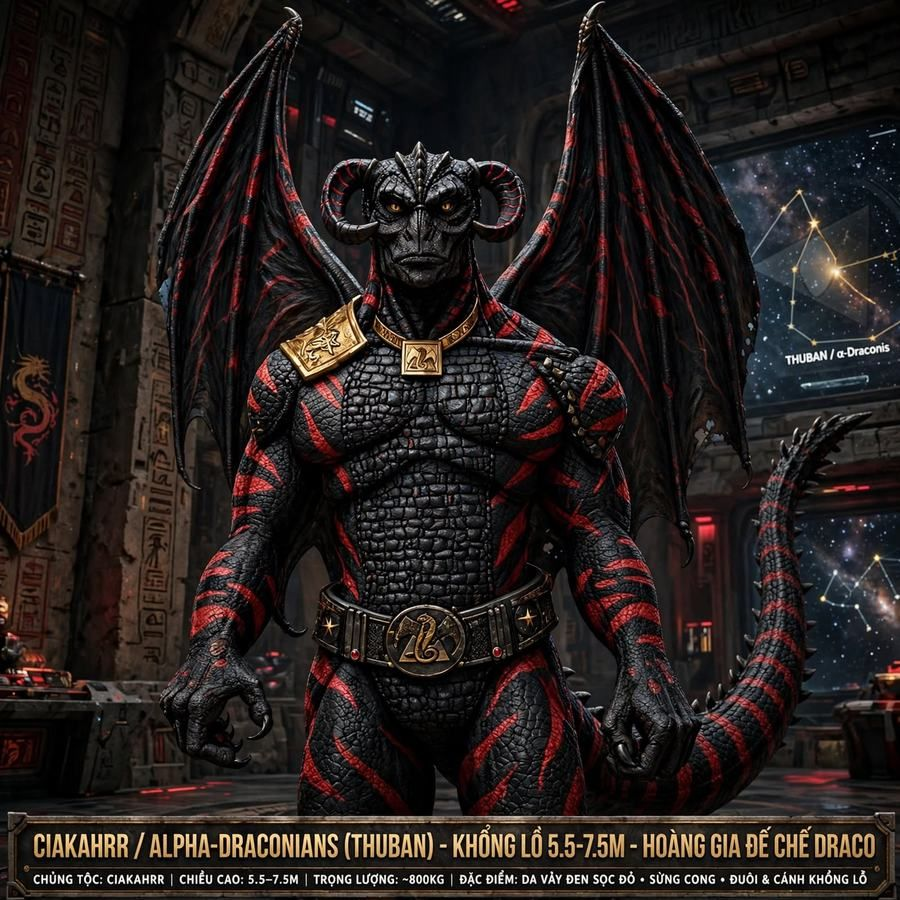
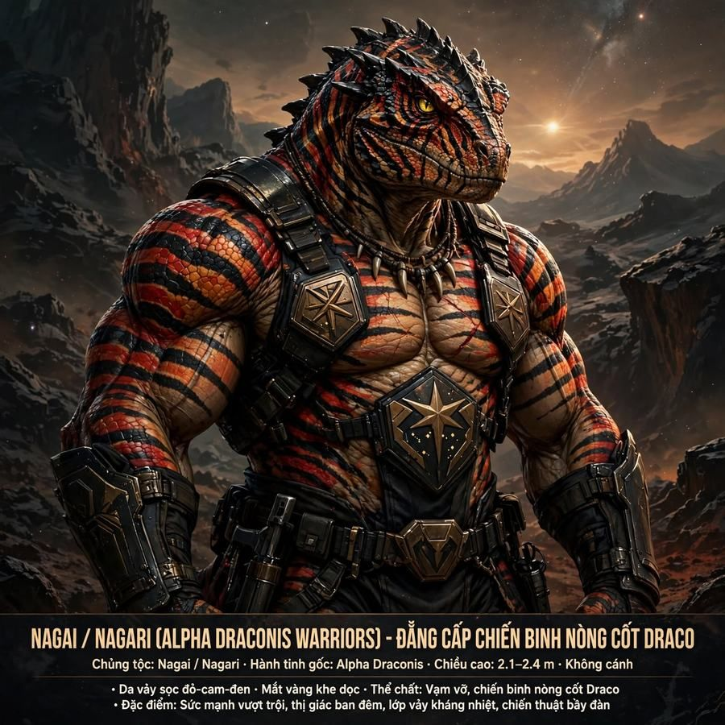
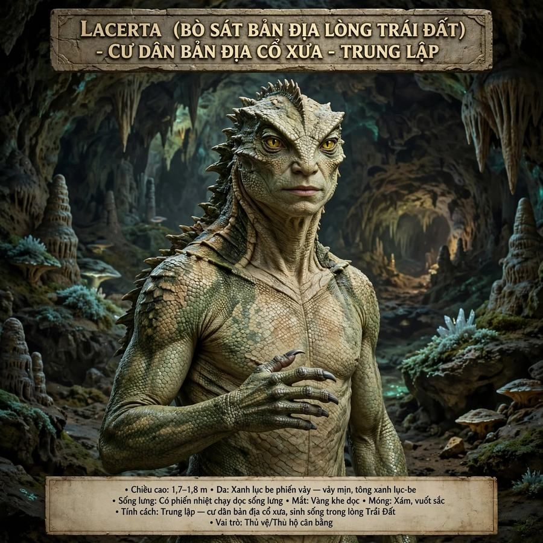
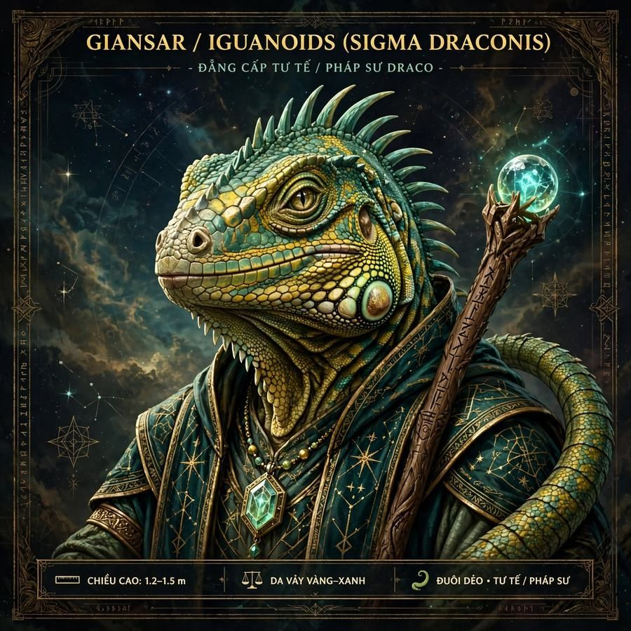
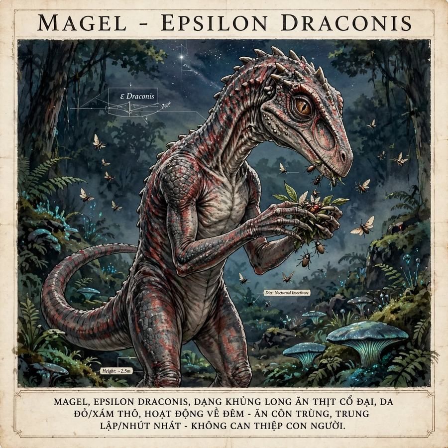
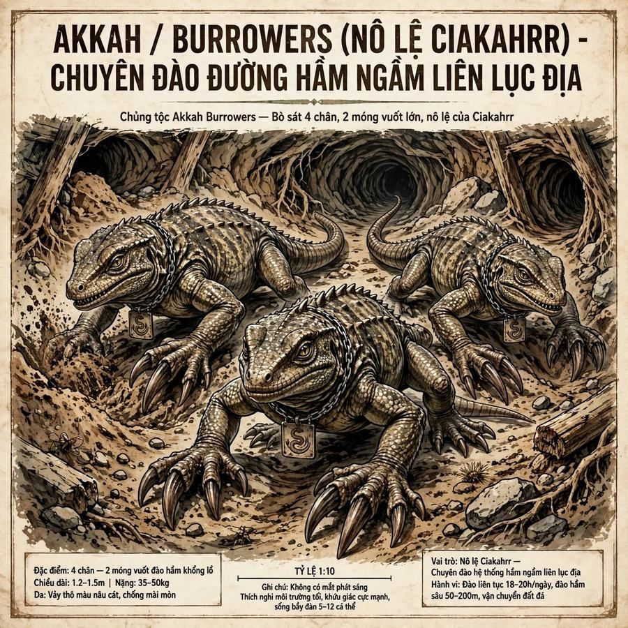
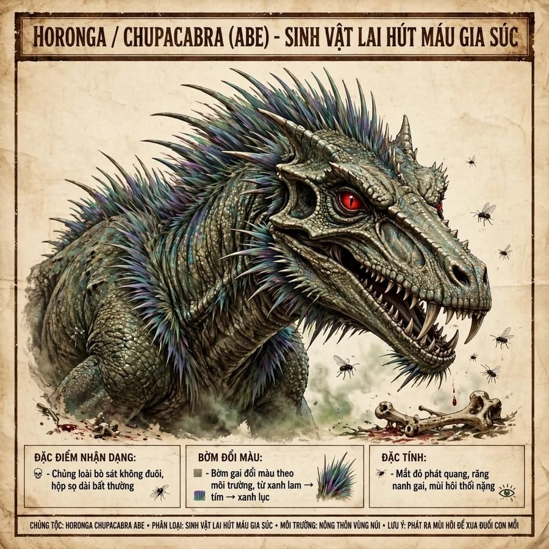
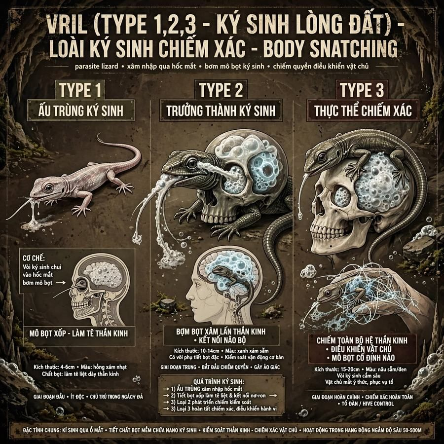
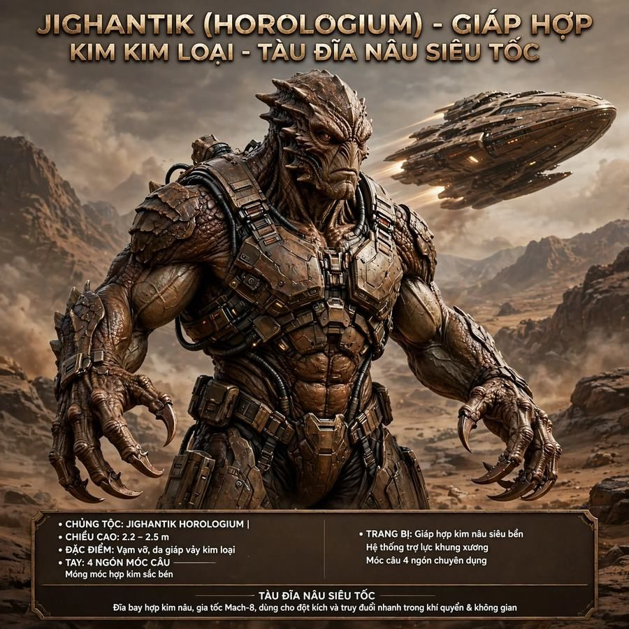
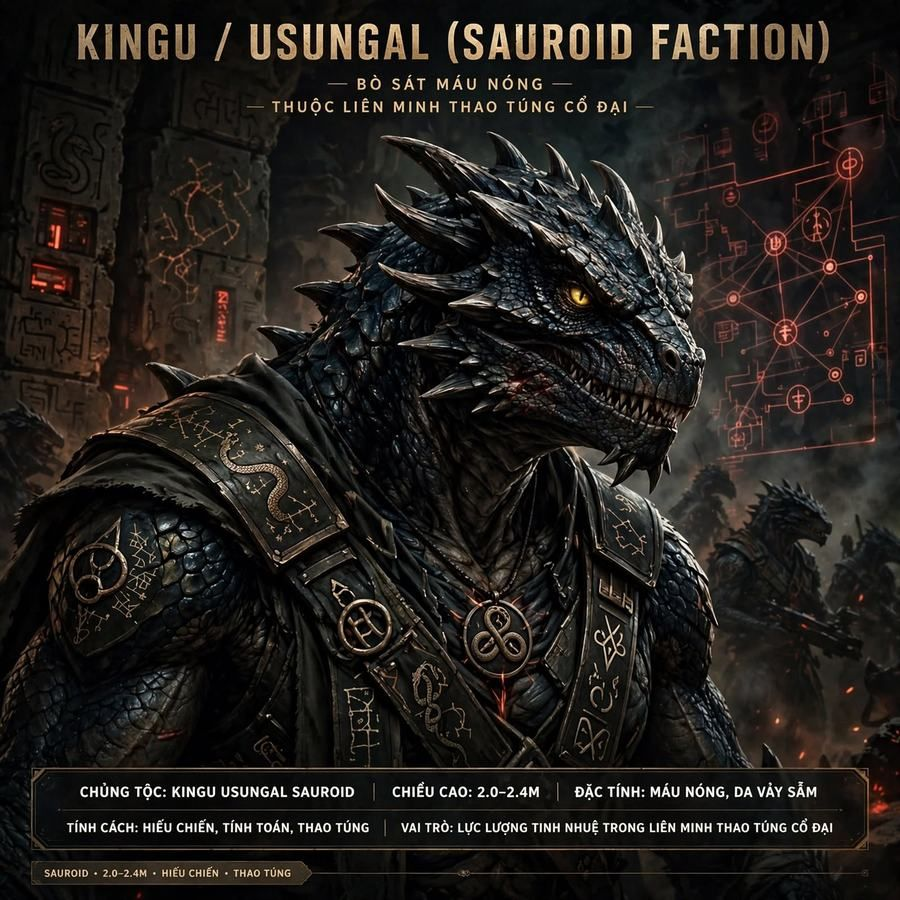

Trang chủ / Chuyên đề 7: Hồ Sơ Các Chủng Tộc / Kỳ 67
Chuyên đề 7 · Kỳ 67 / 90
ĐẾ CHẾ BÒ SÁT DRACO (CIAKAHRR) & BÒ SÁT BẢN ĐỊA TRÁI ĐẤT (LACERTA)

Kỳ này trình bày hồ sơ sinh học của 10 chủng tộc thuộc khu vực Đế Chế Bò Sát Draco (Ciakahrr) & Bò Sát Bản Địa Trái Đất (Lacerta). Mỗi hồ sơ gồm hình dáng, chiều cao, đặc điểm sinh học – giác quan, và vai trò trong bức tranh thiên hà.
Ciakahrr / Alpha-Draconians (Thuban / Alpha Draconis)
- Hình dáng & Chiều cao: Khổng lồ cao 5,5m – 7,5m, nặng 800–900kg. Da vảy be/đen sọc đỏ/vàng; có cặp sừng cong, đuôi dài và đôi cánh da khổng lồ.
- Đặc điểm Sinh học & Giác quan: Máu lạnh, ngụy trang lượng tử, biến hình. Nạp Adrenochrome và thịt sống. Tuổi thọ 1.800 – 4.100 năm.
- Đặc tính & Vai trò Thiên hà: Tiêu cực/Xâm lược; Hoàng gia Đế chế Draco nô dịch 3D.

Nagai / Nagari (Alpha Draconis Warriors)
- Hình dáng & Chiều cao: Cao 2,1m – 2,4m; vạm vỡ, không có cánh. Da vảy thô sọc đỏ/cam/đen; mắt vàng khe dọc.
- Đặc điểm Sinh học & Giác quan: Ẩn nấp dưới lòng đất sâu, chịu đựng môi trường cực hạn. Ăn 1 bữa/15 ngày.
- Đặc tính & Vai trò Thiên hà: Tiêu cực; Đẳng cấp chiến binh nòng cốt Draco.

Lacerta (Bò sát bản địa lòng Trái Đất)
- Hình dáng & Chiều cao: Cao 1,7m – 1,8m; da xanh lục pha be. Dọc sống lưng có chuỗi phiến nhiệt 2–3cm chứa mạch máu sưởi ấm thân nhiệt. Không rốn, móng tay xám nhọn.
- Đặc điểm Sinh học & Giác quan: Mắt vàng/xanh con ngươi khe dọc có màng chớp ngang. Máu lạnh. Tuổi thọ 300 – 500 năm.
- Đặc tính & Vai trò Thiên hà: Trung lập; Cư dân bản địa cổ xưa lòng đất Trái Đất.

Giansar / Iguanoids (Sigma Draconis)
- Hình dáng & Chiều cao: Cao 1,2m – 1,5m; khuôn mặt cự đà (Iguana), da vảy vàng ngả xanh lục, có đuôi dẻo.
- Đặc điểm Sinh học & Giác quan: Thao túng tâm trí, thu hút năng lượng cảm xúc đau.
- Đặc tính & Vai trò Thiên hà: Tiêu cực; Đẳng cấp tư tế/pháp sư Draco.

Magel (Epsilon Draconis)
- Hình dáng & Chiều cao: Cao lớn dạng khủng long ăn thịt cổ đại; da đỏ/xám thô.
- Đặc điểm Sinh học & Giác quan: Hoạt động về đêm, ăn côn trùng.
- Đặc tính & Vai trò Thiên hà: Trung lập/Nhút nhát; không can thiệp con người.

Akkah / Burrowers (Nô lệ Ciakahrr)
- Hình dáng & Chiều cao: Dạng bò sát 4 chân; sở hữu 2 móng vuốt lớn cực kỳ dày ở mỗi chân.
- Đặc điểm Sinh học & Giác quan: Cảm biến sinh học định vị địa chất.
- Đặc tính & Vai trò Thiên hà: Tiêu cực/Nô lệ; chuyên đào đường hầm ngầm liên lục địa.

Horonga / Chupacabra (ABE - Anomalous Biological Entity)
- Hình dáng & Chiều cao: Bò sát không đuôi, hộp sọ dài, răng nanh nhọn; có gai bờm đổi màu dọc sống lưng.
- Đặc điểm Sinh học & Giác quan: Bàn tay 3 ngón móng vuốt; mắt đỏ rực; tiết mùi thối rữa.
- Đặc tính & Vai trò Thiên hà: Tiêu cực; sinh vật lai hút máu gia súc.

Vril (Type 1, 2, 3 — Ký sinh lòng đất)
- Hình dáng & Chiều cao: Thằn lằn nhỏ có vòi ký sinh trên đầu/vòm miệng.
- Đặc điểm Sinh học & Giác quan: Cắm vòi qua hốc mắt con người để bơm mô bọt triệt tiêu não bộ, chiếm đoạt hoàn toàn thể xác và ký ức vật chủ. Dị ứng thực vật.
- Đặc tính & Vai trò Thiên hà: Tiêu cực; loài ký sinh chiếm xác (Body Snatching).

Jighantik (Chòm sao Horologium)
- Hình dáng & Chiều cao: Cao 2,2m – 2,5m; vạm vỡ; bàn tay 4 ngón dài khỏe uốn cong như móc câu.
- Đặc điểm Sinh học & Giác quan: Giáp hợp kim kim loại.
- Đặc tính & Vai trò Thiên hà: Độc lập/Cạnh tranh; tàu đĩa màu nâu siêu tốc.

Kingu / Usungal (Sauroid Faction)
- Hình dáng & Chiều cao: Bò sát máu nóng (Sauroid) cao 2,0m – 2,4m; da vảy sẫm.
- Đặc điểm Sinh học & Giác quan: Máu nóng, hệ thần kinh hiếu chiến.
- Đặc tính & Vai trò Thiên hà: Tiêu cực; thuộc liên minh thao túng cổ đại.
